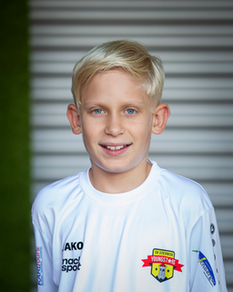

Meine Linz-Seite
Lorenz Wieshofer TEST 4
Name:Lorenz Wieshofer
Alter: 14 Jahre
Wohnort: Linz

Beste Website
Mein Hobby
Mein Hobby ist Fußball.
SV Steyregg
Aktivitäten in Linz und mehr:
Ars Electronica
Lask
Google
Die Linz Checkliste
Khevenhüllergymnasium Linz
Grottenbahn
Schlossmuseum
Zeit
Fach
Nach oben